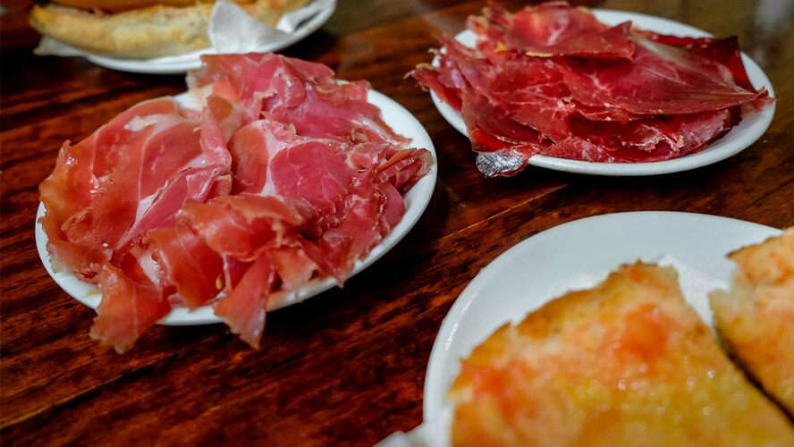

pa amb tomàquet
Una comida típica en Barcelona comienza siempre con una buena rebanada de pan tostado acompañada de ajo y tomate restregados y regada con un buen chorro de aceite de oliva virgen extra. Es el célebre pa amb tomàquet , una auténtica enseña de la gastronomía catalana, tan sencillo como jugoso y que hace las veces de omnipresente aperitivo, funcionando también como acompañante del resto de platos que se sirvan durante la comida.